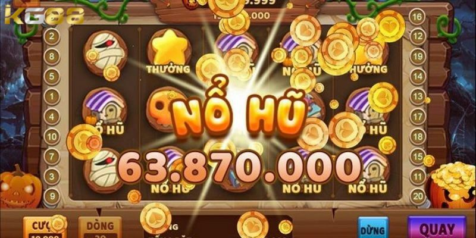

NỔ HŨ KG88
Bật Mí Những Mẹo Quay Hũ Thắng Lớn Cho Game Thủ
POSTED ON THÁNG NĂM 25, 2024 BY ADMINKG88

Mẹo quay hũ thắng lớn sẽ giúp người chơi có những trải nghiệm thú vị khi tham gia chơi nổ hũ. Anh em sẽ được chìm đắm trong thế giới nổ hũ đầy màu sắc mới lạ và nhiều phần thưởng lớn. Cùng KG88 theo dõi bài viết dưới đây để nắm bắt được những mẹo chơi thắng lớn nhé.
Game quay hũ là gì?
Game quay hũ đổi thưởng trực tuyến là một trong những trò chơi phổ biến thu hút được số lượng lớn người chơi tham gia hiện nay. Khi mọi người đã chuẩn bị vốn, một số lượng tiền cược nhỏ sẽ được chuyển vào quỹ thưởng, nếu may mắn trúng giải đặt biệt hay còn gọi là jackpot thì mọi người sẽ được nhận toàn bộ số tiền trong quỹ.
Khái niệm cơ bản cần nắm trong game quay hũ
Dưới đây là một số thuật ngữ trong quay hũ mà anh em cần nắm được để chơi game một cách tốt hơn và tránh những sai lầm phát sinh không đáng có:
- Quay trong tiếng Anh là spin, mọi người nhấn nút này để bắt đầu quay hũ.
- Bet Button là nút đặt cược. Nhấn nút này để thay đổi giá trị và số lượng xu có sẵn trong trò chơi.
- Bet là nút đặt cược, người chơi bấm vào đây để xem tất cả số tiền cược trên vòng quay.
- Tự động quay trong tiếng Anh là Autoplay, nút quay tự động này sẽ giúp anh em tham gia quay mà không cần phải thực hiện thêm thao tác gì.
- Info Button: Là nút thông tin, khi anh em bấm vào đây sẽ biết được các giá trị trong trò chơi, luật chơi và các biểu tượng khác.
- Cược tối đa (Bet Max): Chọn nút này để có thể đặt cược tới tất cả các mức trong trò chơi.
- Bet one (đặt cược một lần): Mọi người đặt cược toàn bộ vào một lần duy nhất để tăng tỷ lệ chiến thắng.
Khái niệm cơ bản cần nắm trong game quay hũ
Bật mí 4 mẹo quay hũ thắng lớn từ chuyên gia
Để chơi tốt trò chơi quay hũ này không chỉ cần đến yếu tố may mắn, mà nó còn đòi hỏi ở người chơi kinh nghiệm và kiến thức. Dưới đây là các mẹo quay hũ thắng được các cao thủ chơi nổ hũ KG88 chia sẻ nếu muốn thắng lớn thì anh em đừng ngần ngại thực hiện theo:
Biết cách tính toán chính xác thời điểm hũ nổ dừng
Tính toán thời điểm dừng quay nổ hũ và số vòng quay vào đúng những ô trúng thưởng đậm một cách chính xác chính là mẹo quay hũ thắng lớn.
- Số lần lặp lại của các mặt có ô điểm cao thường sẽ nằm ở 300 lần khi dealer quay hũ. Mọi người hiểu đơn giản là sau mỗi 300 lần quay các mặt có điểm cao sẽ xuất hiện.
- 1 giây là thời gian được xác định cho 300 lần quay, trong thời điểm này người chơi có thể chờ đợi để xác định thời điểm dừng nổ hũ.
- Tùy thuộc vào mỗi thời điểm dừng quay mà người chơi có thể lựa chọn số giây 1, 2 hoặc 3 để dừng lại.
Chọn phòng chơi phù hợp là mẹo quay hũ thắng lớn
Bởi may mắn và kết quả cuối cùng vẫn là những yếu tố ngẫu nhiên và không thể dự đoán trước được. Các cao thủ thường chơi ở phòng lớn để tăng khả năng trúng hũ và giành được số tiền thưởng lớn. Nhưng khi tham gia quyết định cuối cùng nằm ở mọi người, hãy tính toán cẩn thận để đưa ra những bước đi hợp lý nhất.
Bởi may mắn và kết quả cuối cùng vẫn là những yếu tố ngẫu nhiên và không thể dự đoán trước được. Các cao thủ thường chơi ở phòng lớn để tăng khả năng trúng hũ và giành được số tiền thưởng lớn. Nhưng khi tham gia quyết định cuối cùng nằm ở mọi người, hãy tính toán cẩn thận để đưa ra những bước đi hợp lý nhất.
Chọn phòng chơi phù hợp là mẹo quay hũ thắng lớn hiệu quả
Hạn chế tối đa đánh Jackpot là mẹo quay hũ thắng lớn
Hạn chế tối đa đánh Jackpot là mẹo quay hũ thắng lớn cần nắm. Cược jackpot là 1 hình thức nổ hũ cực kỳ hấp dẫn, mọi người có thể trở thành tỷ phú chỉ sau một ván chơi. Nhưng trên thực tế giải thưởng này thường có khả năng xuất hiện thấp. Mọi người không nên hoàn toàn dựa vào may mắn mà dồn hết tiền vào jackpot, thay vào đó người chơi nên tập trung vào những vòng cược cơ bản để ăn chắc mặc bền.
Mẹo quay hũ thắng lớn tính toán vốn sử dụng
Trò chơi nào cũng phục vụ nhu cầu giải trí và đáp ứng mong muốn thử vận may của mọi người. Mẹo quay hũ thắng lớn tính toán vốn sử dụng giúp người chơi có thể tham gia được nhiều ván hơn, từ đó nâng cao cơ hội chiến thắng cho bản thân. Các cao thủ cũng bật mí rằng, để thử vận may của mình khi khởi động vòng quay anh em nên đặt cược số tiền tối thiểu của 1 phòng chơi.
Mọi người cũng có thể chọn 1 mini game có mức cược thưởng thấp nhất và chơi nó 5 năm ván để xem số lần thắng là bao nhiêu. Nếu như tỉ lệ thắng cao hơn thì chắc chắn thần may mắn đã gõ cửa với anh em hôm nay, hoặc xuất hiện kết quả thua hay hòa thì hãy nghỉ ngơi và quay lại vào khoảng thời gian thích hợp nhất để thử vận may của mình.
Mẹo quay hũ thắng lớn tính toán vốn sử dụng
Hy vọng với những mẹo quay hũ thắng lớn ở trên mà KG88 đã chia sẻ ở trên sẽ giúp anh em có được thắng lớn trong quá trình chơi. Chơi quay hũ không chỉ mang đến niềm vui mà còn có thể đem về nguồn tiền thưởng lớn nếu biết cách áp dụng mẹo quay phù hợp.
BÀI VIẾT MỚI